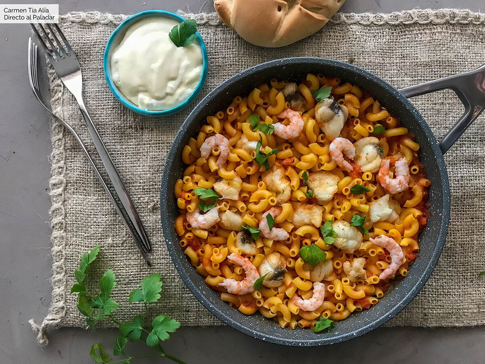

Ingredientes: 4 Raciones
- 400g Fideos gruesos
- 200g Rape
- 2 Sepia
- 16 Colas de gambas
- 2 Dientes de ajo
- 1 cdita albahaca seca
- 4 Tomate pera maduro
- Pimentón dulce
- Azafrán en hebra
- Aceite de oliva virgen extra
- 1L Caldo de pescado o fumet
Instrucciones
- Troceamos el pescado en piezas de tamaño bocado. Calentamos un poco de aceite de oliva virgen extra en
una paella o sartén y lo salteamos. Retiramos y reservamos. A continuación salteamos el marisco.
Retiramos también y reservamos.
- En el mismo aceite, salteamos el ajo picado fino, y cuando se empiece a dorar añadimos el tomate pelado
y rallado, el pimentón, las hebras de azafrán, los fideos y el caldo caliente. Salpimentamos al gusto y
dejamos cocer a fuego medio unos siete u ocho minutos.
- En este punto añadimos el rape reservado y dejamos cocer un par de minutos más. Incorporamos el marisco
pelado, tapamos y dejamos reposar dos minutos más, tiempo suficiente para que se cuezan las gambas con
el calor residual. Si la fideuá queda seca durante la cocción, añadimos pequeñas cantidades de caldo de
pescado, siempre caliente.
- Lo mejor es dejar reposo el guiso durante un par de minutos antes de servir, y tapado unos minutos para
que los fideos absorban todo el caldo. Presentamos en la misma paella, de la que se servirán los
comensales. La mejor guarnición para la fideuá tradicional es un poco de alioli, que debe mezclarse en
el plato, y una copa de vino blanco bien fresco..
¡El secreto para una buena fideuá es partir de un fumet o caldo de pescado casero siempre que sea posible. En
caso contrario podemos recurrir a marcas de confianza y calidad. Y con una salmorreta queda de lujo.!
INICIO